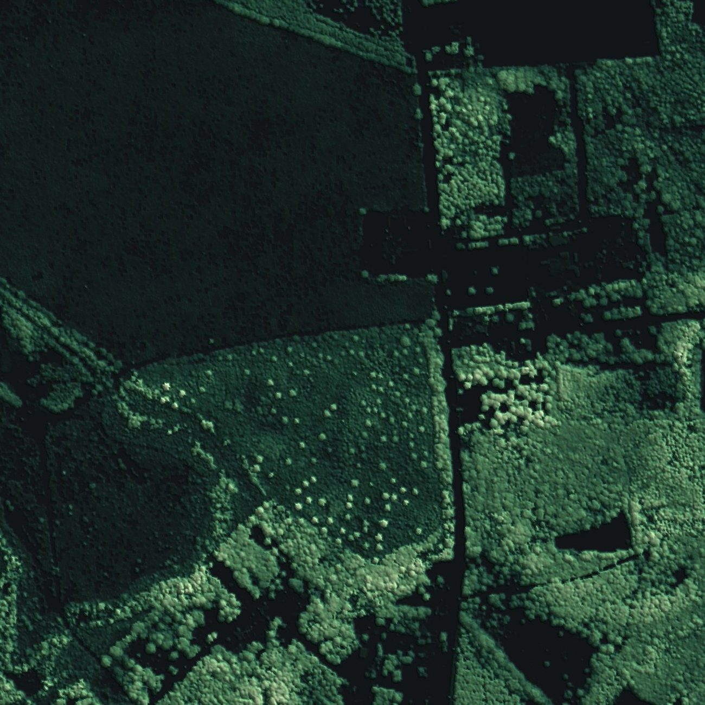
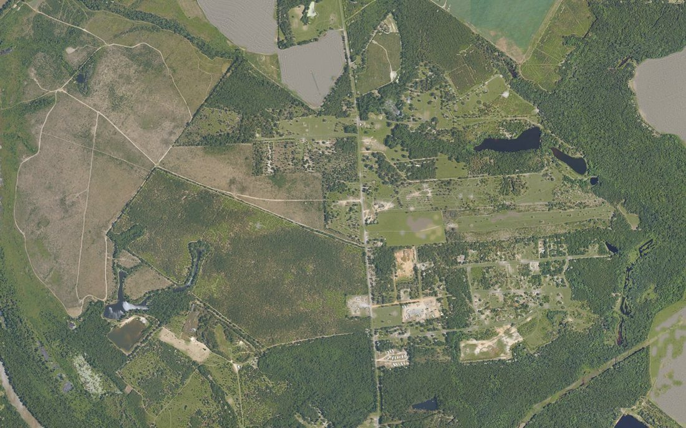
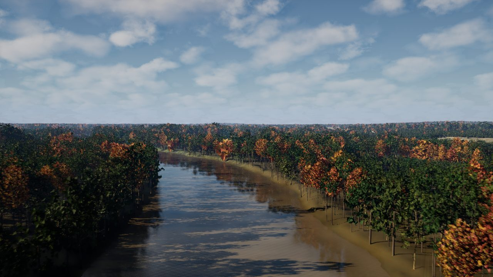
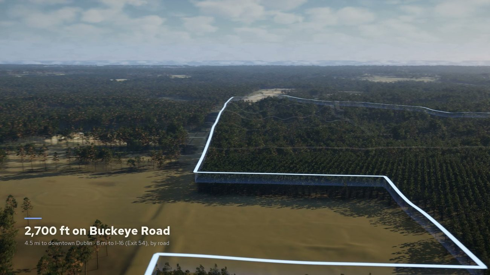
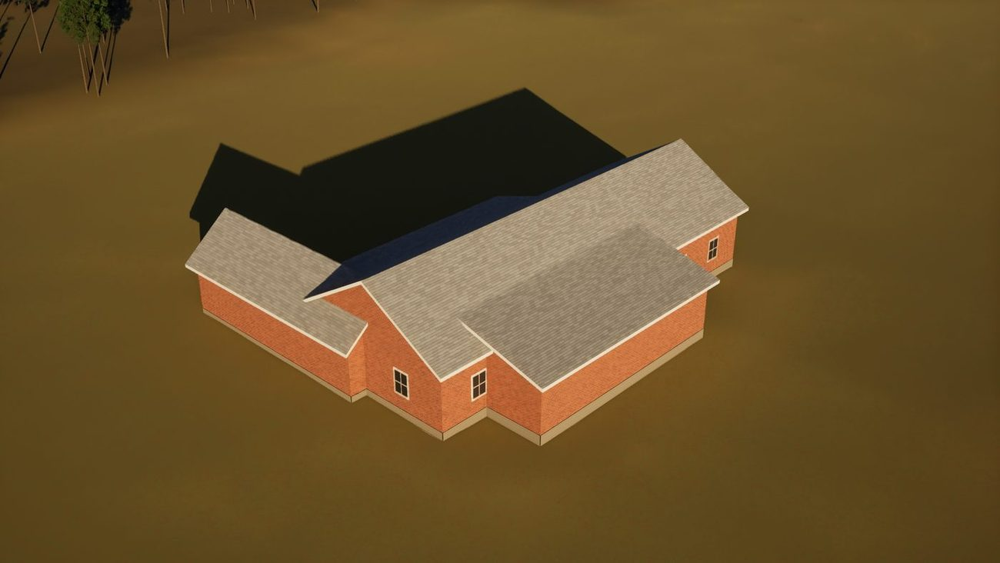
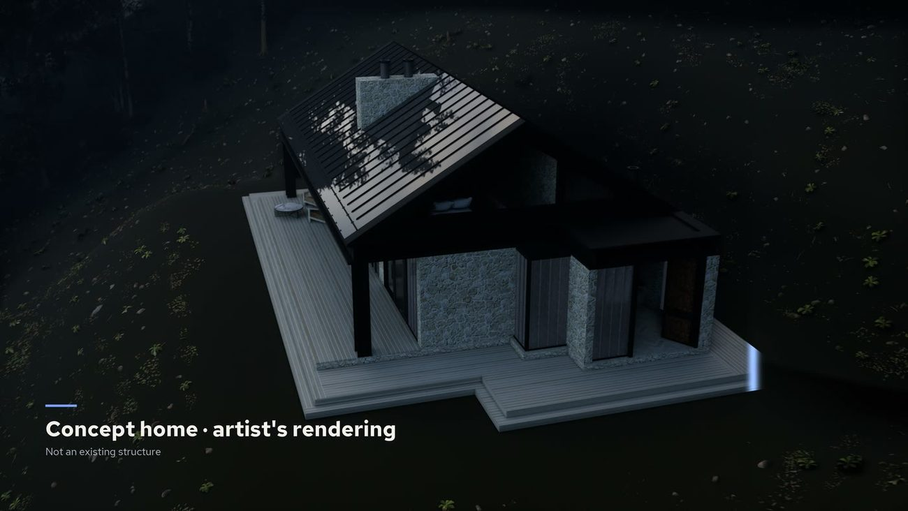
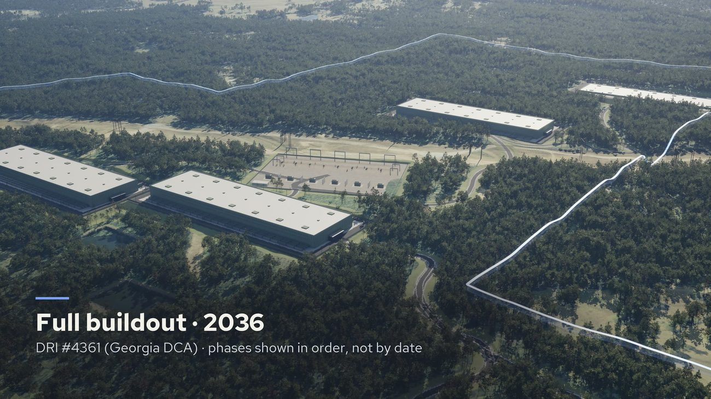
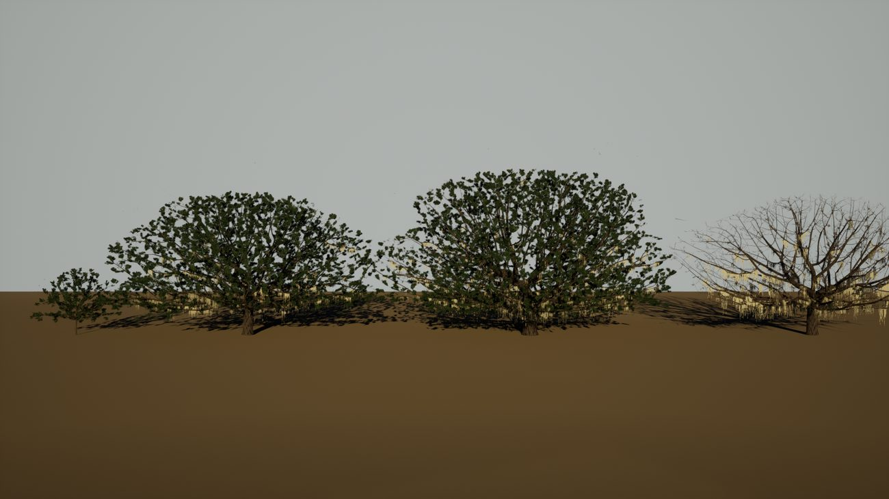

In films
Terrain from the laser survey
Each property's own ground, a meter at a time: slopes, creeks, ponds and roadbeds.
23 types: ground, water, roads, buildings, rock, understory, seasons and light. Status, source, and whether it is ours to sell. Licensed libraries are used in films only.
84 species · 44 in films. Tree inventory
What the land is covered with, in every season.

Each property's own ground, a meter at a time: slopes, creeks, ponds and roadbeds.

The newest aerial photo laid over the terrain; sharper detail near the camera.

Every field follows its own crop through the year: planted, green, white cotton, harvested, dormant pasture, spring green-up.
Under the hardwoods the ground goes from spring green to leaf litter; under pines it stays straw.
Rivers, ponds and creeks in their real colour.

Each water body takes its own colour from the photo: a tan river, a dark pond; lighter shallows at the banks, rougher water over shoals.
Every road and woods track, the way it looks on the ground.

Woods tracks and county roads with wheel ruts and grassy middles, coloured from the land's own soil.
Paved roads with shoulders and lines along the property's frontage.
What stands on the land, and what's planned for it.

Neighbouring homes, barns and sheds rebuilt from their roofs in the laser survey, given real roof shapes and colours.

A home placed on the real site to show what could be built; always labelled as a concept.

A planned project's buildings, grading and roads laid onto the real land, from a layout the client approves.
Bluffs, outcrops, boulders and creek beds.
Scanned rock from a free library, placed where the survey shows bluffs and outcrops.
Granite, sandstone and Lookout Mountain's bluffs from our own photographs, sellable.
The ground layer at eye level.
Bahia, Bermuda and broomsedge at eye level, by season.
The forest floor up close: straw under pines, leaves under hardwoods.
Bracken fern, bulrush and reeds from a licensed library, for wet edges.
What makes a still scene feel alive.

One setting picks the day of the year. Each species leafs out, turns and drops on its own calendar, each tree a few days from its neighbours; evergreens stay green; flowers and berries come in their weeks.
One wind across the land: crowns lean in the gusts, limbs bob, leaves flutter, nothing tears apart.

Grey curtains hanging from level limbs of live oaks and cypress, all year.
Knobby knees standing round the base of a cypress, and the flared base of a tupelo in the water.
The sun, the sky and the camera.
The sun at the real time of day for the property, a physically based sky and clouds.
A smooth flight planned against the real treetops, with a film lens and grade.
Bought or free content we use in films and never resell.
Thirteen packs (oak, beech, maple, birch, pine and more), used only where a species isn't built yet, and never passed off as Georgia trees.
Loblolly, white oak, red oak and tulip poplar bark scans and a leaf atlas, as reference until our own photos replace them.